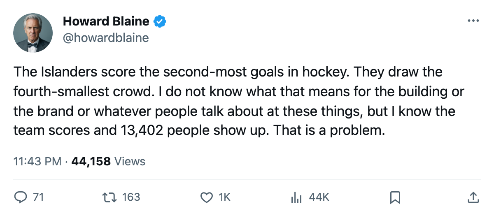
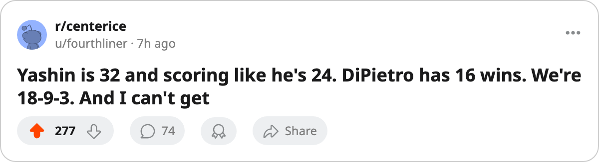

98 Goals, 13,402 Seats Taken: The Islanders Score the Second-Most in Hockey and Cannot Fill the Atlantic's Smallest Building
New York is 18 and 9 and 3, 9 wins in 10, 5th in the Eastern Conference on $1.49M a point, and 3,416 people a night shorter than Tampa Bay for the same points
 Howard BlaineSenior writer, The Blaine Rankings · The Hockey Gazette
Howard BlaineSenior writer, The Blaine Rankings · The Hockey Gazette
 New York Islanders has scored 98 goals in 31 games. That is the second-highest total in the league, behind only
New York Islanders has scored 98 goals in 31 games. That is the second-highest total in the league, behind only  Toronto Maple Leafs's 113 in 33. The Islanders are 18-9-3, 41 points, 5th in the Eastern Conference, and they have won 9 of their last 10 games, riding a 5-game winning streak into Saturday's home date with Washington. They draw 13,402 fans a night, the lowest figure in the Atlantic division and the 3rd-lowest in the league.
Toronto Maple Leafs's 113 in 33. The Islanders are 18-9-3, 41 points, 5th in the Eastern Conference, and they have won 9 of their last 10 games, riding a 5-game winning streak into Saturday's home date with Washington. They draw 13,402 fans a night, the lowest figure in the Atlantic division and the 3rd-lowest in the league.
The arithmetic that bothers me is the comparison with  Tampa Bay Lightning. Tampa Bay also has 41 points, in 33 games. Tampa draws 16,818 a night. Same points, 3,416 more people, on $59.79M against New York's $61.02M. The Islanders spend $1.49M per point and the Lightning spend $1.46M. The Islanders score 3.16 goals a game. The people who go to see the team that scores more goals cannot seem to find the building.
Tampa Bay Lightning. Tampa Bay also has 41 points, in 33 games. Tampa draws 16,818 a night. Same points, 3,416 more people, on $59.79M against New York's $61.02M. The Islanders spend $1.49M per point and the Lightning spend $1.46M. The Islanders score 3.16 goals a game. The people who go to see the team that scores more goals cannot seem to find the building.
Yashin at 32
 Alexei Yashin83 has 45 points in 31 games: 26 goals, 19 assists, a 119 pace. At 32, he is the 3rd-highest-scoring center in the league behind
Alexei Yashin83 has 45 points in 31 games: 26 goals, 19 assists, a 119 pace. At 32, he is the 3rd-highest-scoring center in the league behind  David Legwand88's 49 and tied with
David Legwand88's 49 and tied with  Richard Zednik81's 45. His 26 goals lead all centers. He carries a Book grade of 83 and 21.2 minutes a night.
Richard Zednik81's 45. His 26 goals lead all centers. He carries a Book grade of 83 and 21.2 minutes a night.
The supporting names are not household ones.  Mark Parrish81, 28, has 38 points in 31 games on 16 goals and 22 assists.
Mark Parrish81, 28, has 38 points in 31 games on 16 goals and 22 assists.  Rick DiPietro86, 23, first overall in 2000, has 16 wins in 27 games against a 2.58 goals-against and a 0.875 save percentage. He has no shutouts. The Islanders score too much to need one; they also allow 83 in 31, 2.68 a night, which is 17th in the league. This is a team that outscores you.
Rick DiPietro86, 23, first overall in 2000, has 16 wins in 27 games against a 2.58 goals-against and a 0.875 save percentage. He has no shutouts. The Islanders score too much to need one; they also allow 83 in 31, 2.68 a night, which is 17th in the league. This is a team that outscores you.
What the schedule says about Saturday
 Washington Capitals visits Saturday at 7-18-5, 23 points, on a 7-game losing streak, 5-15 on the road. The two teams met once, a 4-3 overtime game that the record counts as a point for each side. The Capitals have the lowest points total in the Eastern Conference. Their attendance is 15,913, which is 2,511 more than the Islanders draw despite 18 fewer points.
Washington Capitals visits Saturday at 7-18-5, 23 points, on a 7-game losing streak, 5-15 on the road. The two teams met once, a 4-3 overtime game that the record counts as a point for each side. The Capitals have the lowest points total in the Eastern Conference. Their attendance is 15,913, which is 2,511 more than the Islanders draw despite 18 fewer points.
| Club | Points | GP | Attendance | Revenue | Profit | Per Point |
|---|---|---|---|---|---|---|
| NYI | 41 | 31 | 13,402 | $45.83M | $15.16M | $1.49M |
| TB | 41 | 33 | 16,818 | $46.96M | $14.45M | $1.46M |
| NJ | 43 | 29 | 16,977 | $59.72M | $31.35M | $1.35M |
| PIT | 39 | 31 | 15,768 | $44.33M | $18.23M | $1.25M |
The Islanders are profitable, $15.16M of it, and they sit 3rd in the Atlantic behind New Jersey's 43 points in 29 games and the Rangers' 45 in 34. Their 12-5 home record is the best winning percentage in the Eastern Conference. Their attendance, at 13,402, is lower than any of those three clubs draw.
The cost of the gap
New York spends $61.02M. That is the 9th-largest payroll in the league. The revenue, $45.83M, comes from ticket sales at $81 a seat. The Rangers spend $92.95M and get 14,727 people at $82 a night and $54.91M in revenue. The Islanders spend $31.93M less and make $9.08M less in revenue and still put more goals on the board than the Rangers do, 98 to 92.
The profit is $15.16M and the books balance. The question the front office has no answer for is why a team scoring 98 goals in 31 games, with 16 wins from a 23-year-old goaltender, sitting 18-9-3 and 5th in a 15-team conference, should be drawing 13,402 at $81 a seat.
The Islanders have 51 games left. They are 3 points above the 8th-seeded  Carolina Hurricanes club with 2 more games remaining than Carolina, which means the cushion is real and the margin for error is not large. On Saturday, against a team on a 7-game losing streak and 5-15 on the road, the result is not in much doubt. What 13,402 people decide about their Saturday evening is the open question.
Carolina Hurricanes club with 2 more games remaining than Carolina, which means the cushion is real and the margin for error is not large. On Saturday, against a team on a 7-game losing streak and 5-15 on the road, the result is not in much doubt. What 13,402 people decide about their Saturday evening is the open question.

